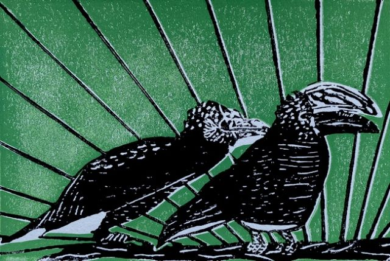
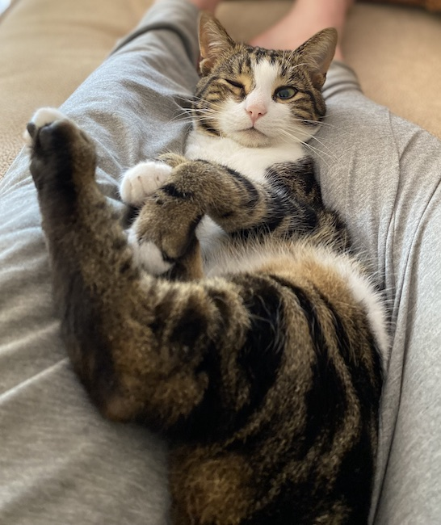

Rectangle | Square
#2 | Practice, Nurseries, Franking
Welcome back to Rectangle | Square, a newsletter from me, writer and city planner Jonathan Tarleton. If you like it, forward it to a friend and/or subscribe here.

A pair of silvery-cheeked hornbills. Print by yours truly.
Happenings
I just got back to Nairobi after a trip to South Africa and the US—the latter full of time with family and friends, a first, very fun experience going to a car race (incl. fried bologna burgers), and walks in the woods while rolling buckeyes in each palm. Those of you I saw spoke so kindly about this endeavor, and I've been astonished at the kind emails and fun updates I've gotten in response to the first edition. You've convinced me that this is worth it—thank you! As filling as my trip was, it's nice to be back in my current home and timely: I'm hoping those hornbills above return to our balcony this month, and my first bit of writing on Nairobi was recently published in Orion Magazine. It's a short musing on a lack of rootedness in place through the lens of the city's abundant, roadside plant nurseries. It's print only, but you can download it as a PDF here
Alongside place, practice (not a game, not a game ...) is something I've spent a lot of time thinking about over the last 7 years. That's involved hand-wringing over what city planning is and what role writing should play in my work. I've also tried to ask myself 'who am I as a practitioner?', inspired by a grad school exercise to craft a Personal Theory of Practice—a document that can guide and situate someone in their work.
I couldn't take the class that centered this exercise, but me and a handful of classmates* wanted to develop our theories as we prepared to act on what we'd studied in new jobs. In 2018, we met over a semester to sort out, first, how we might identify our unique approaches to our work and, then, how to articulate that. We worked through exercises to identify our values and how to connect them to dilemmas we expected to face. I spent a few months carrying little notecards in my pocket to prompt thoughts on what a practice of 'The Concrete' or 'Conflict' might mean. In the course of discussion and contemplation, we documented our process and created a loose curriculum that's been used by fellow planning grad students and incorporated into a public health course.
As I have at other moments of professional transition and/or discomfort since, I recently looked back on this document. It reads to me right now as overwrought, naive, not humble enough. It probably needs updating to reflect my updates. But it also remains a guide. The most valuable aspect of creating it was, however, the collective our group built. We have met quarterly for the last five years despite our geographic scatter and varied jobs. We're sounding boards for each other and witnesses to our growth. 10/10, would recommend, and if you're curious, find our rough curriculum here. If you're really keen, you can email me: I'm always happy to give tips on starting a similar process, and I might share my personal theory (maybe ...).
*The Personal Theory of Practice crew includes Danya French Littlefield, Jessica Wolff, Erina Keefe, and Reed Jordan, w/ key early facilitation from lawrence barriner ii.
I started to write this as violence escalated in Israel and Occupied Palestine, and I wondered if I should broach the topic here. Thinking about my personal theory of practice helped me answer. I committed to a practice of conflict—that I not avoid it as somehow bad; that I engage in it when it's necessary. So I'll do what historian Gabriel Winant said earlier this week was the only thing Americans can meaningful do right now: to confront "at every opportunity the vast public conspiracy of silence about the occupation."" That is, the root of this cycle of violence: settler colonialism, ethnic cleansing, and the Israeli apartheid state's occupation of Palestine. I've linked below some articles on this week's events, the public response, and responsibility that were formative in my thinking. I hope they're helpful to you in making sense of all the terrible stuff, especially as politicians and media in the US and Europe appear to actively encourage genocide in Gaza.
T. Recs
1. Omid Safi, Noura Erakat, Tareq Baconi, David Klion, Gideon Levy, & Abdallah Fayyad on Gaza
2. The Inheritors: An Intimate Portrait of South Africa's Racial Reckoning by Eve Fairbanks
3. Reservation Dogs, created by Sterlin Harjo and Taika Waititi
4. Mipso's Book of Fools
5. Turn Every Page: The Adventures of Robert Caro and Robert Gottlieb, directed by Lizzie Gottlieb
6. JH Pierneef's Johannesburg Station Panels
Tangents
A favorite part of writing for me is seeking an answer to a small question, then ending up on some odd research foray. The question, then ...---> ... the tangent.
Why is the privilege of mailing stuff for free called "franking"? ---> Well, it comes fromthe French verb affranchir, which means "to free,"" which also relates to the phrase "to be frank," or to speak freely. ---> Associative tangent beyond the realm of reality: Benjamin Franklin was the first postmaster of the US (what are the odds!). He was based in Philadelphia, whose major league baseball team is the Phillies. Try and tell me that's not short for Philatelists—those menacing, ball-playing stamp collectors.

Kaju winks
Thanks for reading and take good care,
Jonathan